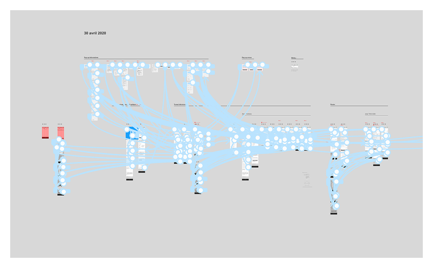
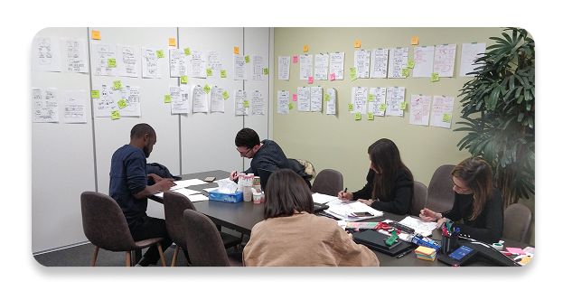
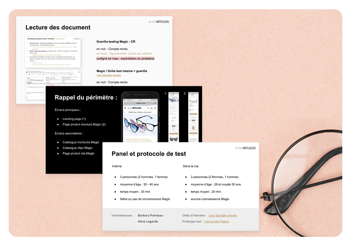
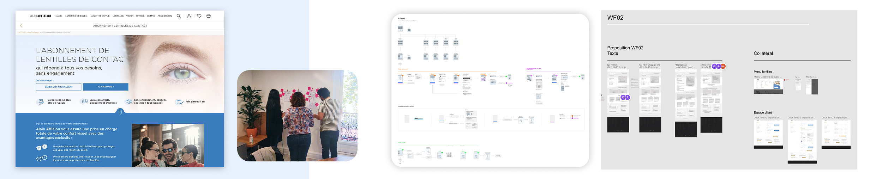
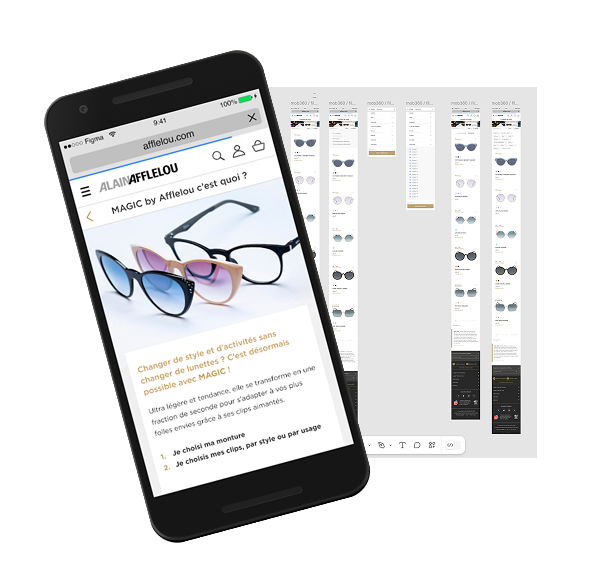

01
Audit and scoping
UI/UX audit, stakeholder mapping, needs framing, and collaborative workspace setup.

Embedded at Afflelou Digital via UX Republic to build a design practice, ship e-commerce features, and upskill the internal team.
Alain Afflelou is one of France's historic optics brands with an international footprint, but a business model built on franchises rather than digital commerce. The digital team needed to accelerate: launch optical e-commerce, add a contact lens subscription, and replatform Malentille.com.
The mission also meant building the design practice that did not yet exist: establishing the tools, rituals, shared references, and skills needed to keep design quality consistent across several business lines.
The real challenge. Management strategy and priorities shifted repeatedly throughout the mission. Staying productive and keeping design quality consistent while adapting to frequent pivots, without an established design culture to anchor decisions, was the defining constraint.
There was no large upfront research budget. The approach relied on continuous qualitative learning: audit, lightweight user testing, co-design, production, and handoff rituals that could remain useful after the mission.
UI/UX audit, stakeholder mapping, needs framing, and collaborative workspace setup.
Guerilla tests, synthesis, Testapic studies, and a continuous test-learn-iterate loop.
Workshops, wireframes, high-fidelity mockups, prototypes, feasibility checks, roadmap input, and UX writing.
Figma migration, UI Kit, reusable design system, recruitment, coaching, and team upskilling.
Handover to internal teams and providers, UX evangelization, and coaching for middle management.
Tools: Figma · Miro · Google Analytics · Trello · Google Suite · Teams




Optical e-commerce flows · contact lens subscription · Malentille.com redesign.
UI Kit and design system with reusable components, patterns, principles, and UX/UI specifications.
Audit and roadmaps · research synthesis · workshop facilitation · provider handoffs · team coaching.
At the end of the mission, the team had a shared design reference, reusable tooling, production rituals, and people able to keep the practice moving.
The strongest signal that the foundation held: after the contractual clause period, Afflelou came back directly - without going through an agency - to finalize the design system and UI handoffs. The practice ran without the original designer.
Starting with UI cleanup and quick-and-dirty fixes felt like a step down - work a junior could handle. It took time to see it for what it was: the only way in. In an organization with no design culture, you earn strategic scope by delivering on the mundane first. The design studio didn't happen despite the cleanup work - it happened because of it.
I now factor this in explicitly when scoping embedded missions: the first month buys the next six.
Intégrée chez Afflelou Digital via UX Republic pour structurer la pratique design, livrer des fonctionnalités e-commerce et faire monter l'équipe interne en compétences.
Alain Afflelou est une marque historique de l'optique française avec une présence internationale, mais un modèle économique construit autour de la franchise plutôt que du commerce digital. L'équipe avait besoin d'accélérer : lancer l'e-commerce optique, ajouter un abonnement de lentilles et refondre Malentille.com.
La mission consistait aussi à construire la pratique design qui n'existait pas encore : poser les outils, les rituels, les références communes et les compétences nécessaires pour maintenir une qualité constante sur plusieurs lignes métier.
Le vrai défi. La stratégie et les priorités du management ont changé plusieurs fois pendant la mission. Il fallait rester productive et maintenir la qualité design malgré les pivots fréquents, sans culture design préexistante pour stabiliser les décisions.
Il n'y avait pas de budget important pour une étude amont. L'approche reposait sur un apprentissage qualitatif continu : audit, tests légers, co-design, production et rituels de transmission utilisables après la mission.
Audit UI/UX, cartographie des parties prenantes, cadrage des besoins et mise en place de l'espace collaboratif.
Tests guerilla, synthèse, études Testapic et boucle continue tester-apprendre-itérer.
Ateliers, wireframes, maquettes haute fidélité, prototypes, faisabilité, roadmap et UX writing.
Migration Figma, UI Kit, design system réutilisable, recrutement, coaching et montée en compétences.
Handoff aux équipes et prestataires, évangélisation UX et coaching du management intermédiaire.
Outils : Figma · Miro · Google Analytics · Trello · Google Suite · Teams
Parcours e-commerce optique · abonnement lentilles · refonte Malentille.com.
UI Kit et design system avec composants, patterns, principes et spécifications UX/UI réutilisables.
Audit et roadmaps · synthèses de recherche · facilitation d'ateliers · handoffs prestataires · coaching d'équipe.
À la fin de la mission, l'équipe disposait d'une référence design commune, d'outils réutilisables, de rituels de production et de personnes capables de poursuivre la pratique.
Le signal le plus fort que les fondations ont tenu : après la période de clause contractuelle, Afflelou est revenu directement - sans passer par une agence - pour finaliser les parcours et les handoffs UI. La pratique a tenu sans la designer d'origine.
Commencer par du nettoyage UI et du quick-and-dirty ressemblait à un déclassement - un travail qu'un junior aurait pu faire. Il a fallu du temps pour comprendre ce que c'était vraiment : la seule porte d'entrée. Dans une organisation sans culture design, on gagne de la portée stratégique en livrant d'abord sur le quotidien. Le pôle design n'est pas arrivé malgré le travail de nettoyage - il est arrivé grâce à lui.
Je l'intègre maintenant explicitement dans le cadrage des missions embarquées : le premier mois achète les six suivants.